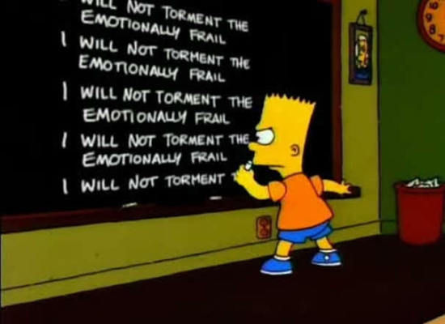

Bart is always in trouble and his punishment is to write on the chalkboard. Pick your favorite Simpsons Chalkboard gag and use a loop to write it 25 times below. You can search for your own or I found a full list at http://simpsons.wikia.com/wiki/List_of_chalkboard_gags